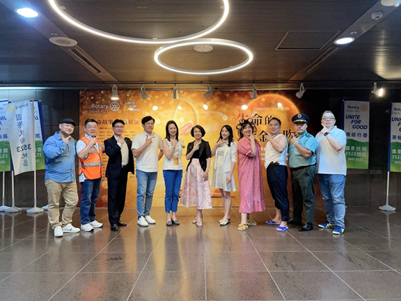
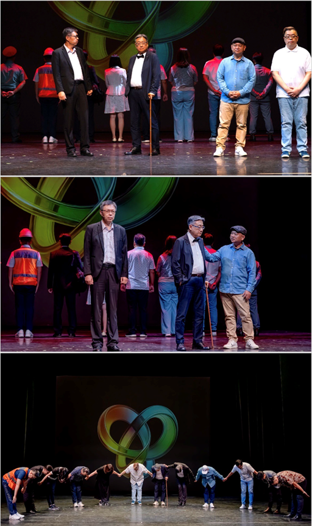
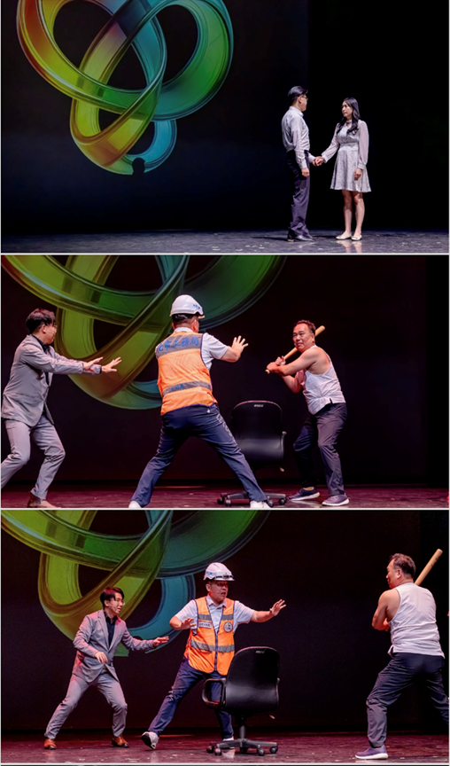
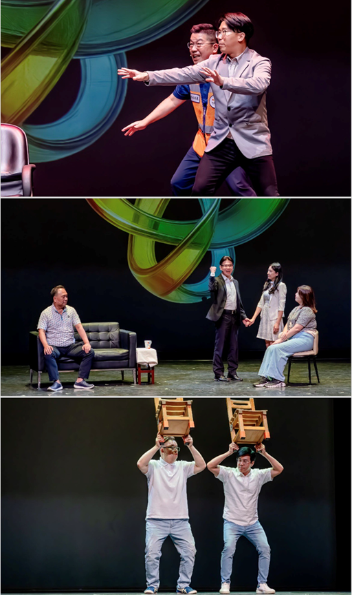
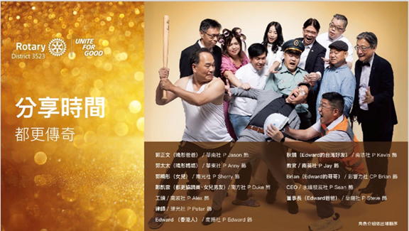
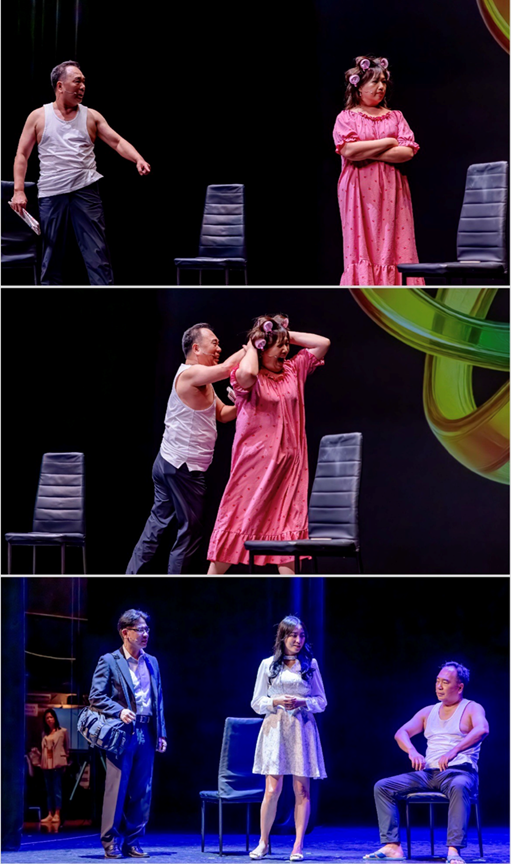
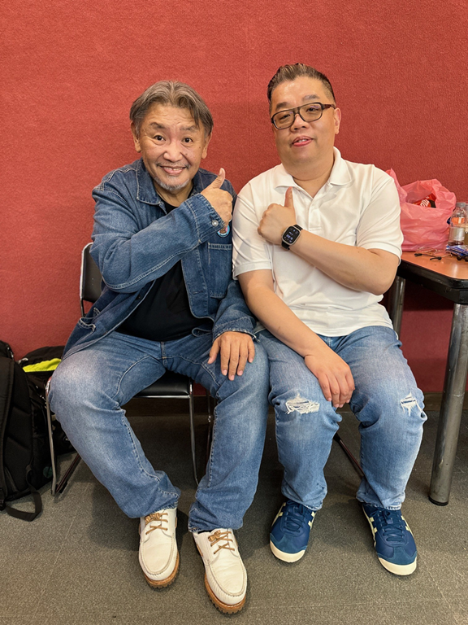

大家好, 我是都更傳奇裡面的咯咯雞 – Edward。
當大熊老師選了我的生命故事成為公益展演的一個環節，心裡湧現了無比複雜的情緒。這不是一場單純的表演，而是我人生的真實經歷被搬上舞台。也給了我一個紀念我好朋友的機會。
我來到台灣入學的第一天，帶著陌生與孤單。語言不相通、文化也有差異，對我而言其實並不容易。就在開學典禮，我遇見了我一生之中最好的朋友 - 秋麟。他給了我最寶貴的東西——陪伴鼓勵與理解。這段情誼，從大學一路延伸到後來我決定留下來在臺灣生活，他都一直照顧著我幫忙我。
秋麟對我來說，不只是朋友，更像是一條毛毯。毛毯看似平凡，卻能在最寒冷的夜裡，給人最溫暖的守護。這份友情不是用金錢衡量的，也不是用世俗地位來定義的，而是實實在在地存在於我心中。每當我回首，總能看見秋麟在那裡對我微笑，這是我一生最大的安慰與幸福。
然而，生命總會帶來無法預料的失落。當秋麟離開的那一刻，我的心裡真的很痛。雖然天天下無不散的宴席, 但是也沒法想到生命是如此的短暫。回想起我結婚當天，也是他負責幫我開禮車及忙了一整天招呼我的朋友及同學。就像我一個哥哥照顧着我。
今天回頭看，這一切就像一段漫長的人生旅程。友情、親情、失落與選擇，交織成了我生命中最深刻的篇章。或許我沒有太多財富，也沒有太多耀眼的成就，但我知道，因為有秋麟，因為有家人，因為有身邊這些珍貴的人，我的人生是完整的。
我很感謝這段經歷，也感謝所有參與到我生命中的人。是你們讓我明白，人生的價值不在於我們擁有多少，而在於我們願意留下什麼給別人。
我想引用我在展演上說過的一句話，作為今天的總結：
「永遠對你的朋友微笑，不要輕易地為他掉眼淚，因為天空容不下太鹹的眼淚。」
願我們都能在人生旅途中，找到屬於自己的那條毛毯；也願我們有一天，也能成為別人心中最溫暖的那條毛毯。
最後再次感謝3523 總監 Jenny 、大熊老師以及所有參與的工作人員、社長同學快以及所有朋友。很榮幸跟大家一起度過那麼難忘的體驗!!






